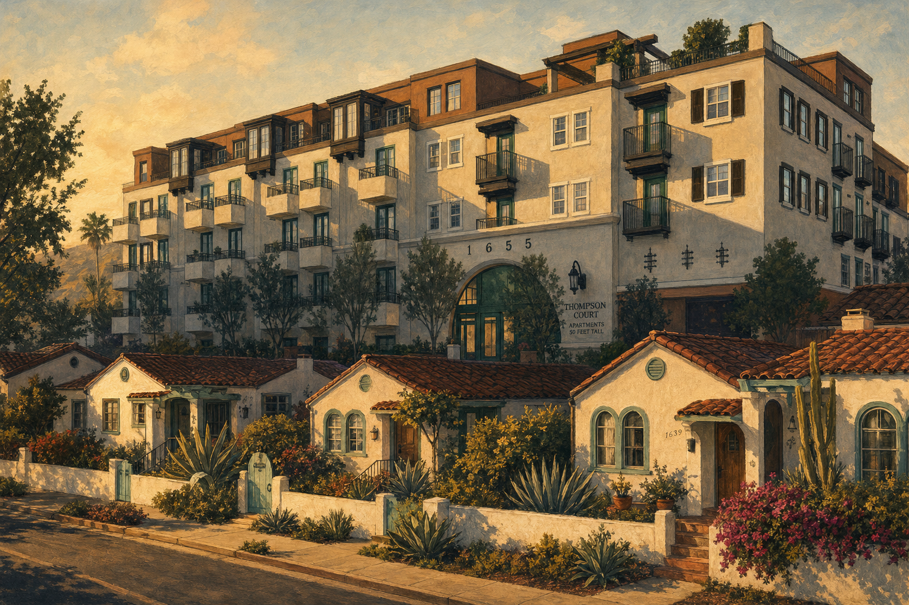

Protecting the Future of the Buenaventura Tract Residential Historic District
We are a community-led organization dedicated to ensuring that development in our neighborhood is safe, lawful, and aligned with the character and well-being of the place we call home.
Responsible development shapes the future of our neighborhood
When projects move forward without meeting the standards that protect safety, access, and community character, the impacts last for generations. Upholding these standards isn't just about one project — it's about preserving the livability, identity, and long-term well-being of the Buenaventura Tract Residential Historic District.
Our community deserves development that respects the people who live here, the history of our streets, and the rules that safeguard public welfare. By staying engaged and supporting this effort, residents help ensure that our neighborhood — and our city — remain safe, vibrant, and welcoming places for everyone.

What we're working toward
Responsible Development
Ensure responsible development at the Thompson Court Apartments by advocating for full compliance with California state laws, local planning standards, and the safety requirements that protect our neighborhood.
Preserve Historic Character
Preserve the historic character of the Buenaventura Tract Residential Historic District through long-term efforts to secure formal historic district designation. While our neighborhood has been recognized as a historic district, formal registration requires a vote of approval from 51% of neighborhood property owners — a process we are actively working to achieve. This designation will protect the neighborhood from future projects that do not fit its established scale, form, or identity.
Community Engagement
Promote meaningful community engagement by sharing clear, accessible information and empowering residents to stay informed, participate in public processes, and shape the future of our neighborhood.
Long-Term Stewardship
Through these combined efforts, we work to ensure the Buenaventura Tract Residential Historic District remains a safe, vibrant, and welcoming place — preserving its character for current residents and future generations alike.
News & media coverage
Regional and local press coverage of the Thompson Court Apartments project and our neighborhood's advocacy efforts.
New 75-unit apartment project approved in Ventura
Coverage of the Thompson Court Apartments project approval and its implications for the community.
Ventura County StarVentura approves Thompson apartments
The Ventura City Council voted to approve the 75-unit apartment development after appeal and public debate.
Ojai Valley NewsApartment complex approved for East Thompson Boulevard
Local coverage of the City Council's approval of the Thompson Court Apartments development.
Resources & frequently asked questions
Key information about the Thompson Court Apartments development, a timeline of events, and answers to common questions about the development process and your rights as a neighbor.
Timeline of Events
Project PROJ-25-0780 submitted to the City of Ventura — a 75-unit apartment development proposed at 1655 East Thompson Boulevard.
The Ventura Planning Commission reviewed the project, including Coastal Development Permit, Lot Line Adjustment, Major Design Review, and Density Bonus concessions.
The Ventura City Council voted 5-2 to uphold the Planning Commission's approval, denying a resident's appeal. Councilmembers Mangone and Campos voted against.
The SBTN Board of Directors filed a Writ of Mandate and Complaint for Declaratory and Injunctive Relief against the City of Ventura to halt the construction of the Thompson Court Apartments.
Neighborhood block party in front of 1667 Santa Ynez St. All neighbors are welcome — come meet your community and learn more about our efforts.
Our organization continues community outreach, sharing updates, and working to ensure the neighborhood's voice is represented as the legal process moves forward.
Thompson Court Apartments — City Project Page
View the official project records, staff reports, and planning documents on the City of Ventura's website.
City of Ventura Planning DepartmentFrequently Asked Questions
Help Us Protect Our Neighborhood's Future
We are committed to ensuring that development in the Buenaventura Tract Residential Historic District, the Thompson Corridor, and all of Ventura follows the standards designed to keep our community safe, accessible, and livable. Pursuing a legal review is a serious step, and we are doing it thoughtfully — with expert guidance and a clear purpose.
Your contribution supports legal costs, community outreach, and the ongoing work of making sure our neighborhood's voice is heard. As a registered 501(c)(3), all donations are tax-deductible. Every contribution strengthens our ability to protect the place we all share.
Legal costs — Expert legal review and representation
Community outreach — Keeping neighbors informed and engaged
Tax-deductible — Registered 501(c)(3) nonprofit
Stay Connected
Get email updates when there's news or action needed.
Note: This form is a placeholder. Connect it to your email platform (e.g., Mailchimp, Google Forms) to collect signups.
Our neighborhood's strength comes from the people who live here
There are several meaningful ways to support this effort and help shape the future of the Buenaventura Tract Residential Historic District.
Speak Up to City Leaders
Share your perspective with City Council, Planning Commissioners, and staff. Public comment — written or spoken — plays a critical role in ensuring community concerns are heard and considered.
Stay Informed & Spread the Word
Follow project updates, attend neighborhood meetings, and help neighbors understand how development decisions affect our historic community.
Support the Effort Financially
Contributions fund legal review, community outreach, and organizational development. As a registered 501(c)(3), all donations are tax-deductible and directly support the protection of our neighborhood.
Join Our Board
We are seeking committed residents to help guide strategy, strengthen advocacy, and support long-term stewardship of the Buenaventura Tract Residential Historic District.
Become a Guest Member
Guest members participate in discussions, offer insights, and contribute to the formation and growth of our organization. Your involvement helps ensure the community's voice is represented in every step of this process.
Together, we can protect the neighborhood we love and ensure future development reflects the values, character, and well-being of the people who call it home.